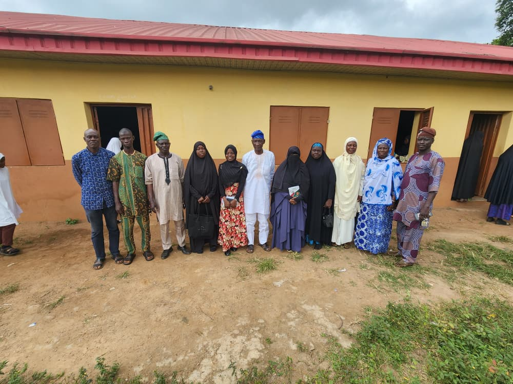

Since our inception in 2019, OFMA has committed itself to empowering women and teens while driving positive change in the Okeho community.
The Okeho Female Muslims' Ambassadors (OFMA) is a non-profit, faith-based organisation dedicated to empowering young Muslim girls and women in Okeho, Oyo State — helping them root their identity in faith and sound morals, while opening their eyes to possibilities beyond what they see around them.
We work just as closely with parents — equipping them with real, practical skills for raising confident, faithful young adults, not merely obedient ones.

It all began as a mere idea in 2018, when the lives of our girls seemed blurry — when indecent relationships were becoming common, teenage pregnancies led many girls to drop out of school, and some of those entrusted with nurturing our girls were grooming them only for marriage.
At our very first summit, a secondary school girl asked a question that changed everything for us: what is the relationship between menstrual pain and sex? She asked because she had been told the falsehood that marriage was the only cure for menstrual cramps. Alhamdulillah for creating a space where a question like that could be asked without fear of judgment.
That is the gap OFMA exists to close — one honest conversation, one empowered woman, one confident girl at a time.
— Bello Faaidah Olabisi, Convener
Our very first summit, held at Okeho Central Mosque — where a single honest question from a secondary school girl set the direction for everything that followed.
Two days of sessions with speakers including Aishah Adams and Saheedat Tobiloba Adetayo, coaching girls to seek Allah's pleasure while living fully.
Seasoned lecturers, soul-inspiring sessions, and halal fun and games at Okeho Central Mosque.
Split programming for adults and teens — from parenting with purpose to vocational training in making inner caps — plus a Day 2 open to men and women alike.
The year we launched Al-Qawaareer Magazine ("The Glass Vessels") — our first real publication, opening with a feature on Shifa bint Abdillah.
Keynote by Alhaji Abubakr Saruq, with Imam AbdurRahman Ahmad, Prof. Muritala K. Kareem, Sis Toyyibah Ibraheem and Mrs Sideeqoh — plus a debate competition and panel sessions.
19–20 December 2026 at FUNATO, Okeho — our biggest gathering yet, with 300+ attendees expected.
Every programme is grounded in Islamic values — not as decoration, but as the actual foundation for how we teach, mentor, and lead.
We measure our work by the lives it changes, not the events it hosts. Growth, learning, and service to community come first.
We don't just work with teens in isolation — we work with the parents raising them, because a healthy home shapes a healthy community.